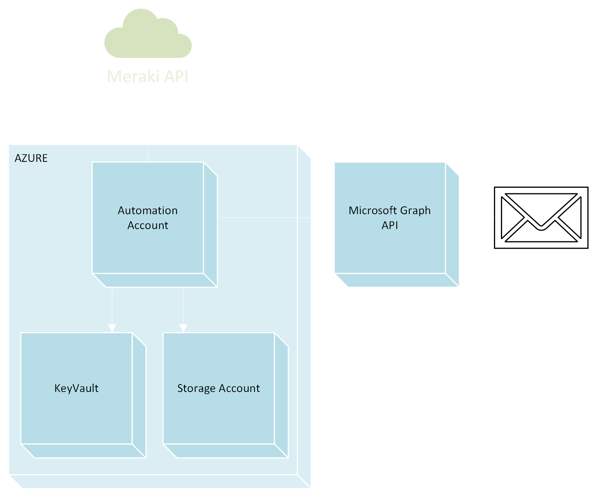

Network Appliance Config Backup
Automate the backup of Cisco and Dell device configurations.
Developed automated workflows using Ansible and Python to execute backups via SSH and APIs.
Ansible
Python
YAML
SSH

Meraki License & Firmware Notifications
Event-driven monitoring for Cisco Meraki firmware and license lifecycles.
Utilized Azure Automation, PowerShell 7, and Meraki APIs for automated reporting.
Azure Automation
PowerShell
Meraki API
Key Vault
Multiagent Copilot RAG
Create a multi-agent chatbot to query enterprise knowledge across SharePoint and VTENext.
Built with Copilot Studio, Azure AI Search, and OpenAI, using Azure Functions for backend logic.
Copilot Studio
Azure AI Search
OpenAI
Azure Functions
Backup Discovery Platform
Aggregate Veeam backup health data into a centralized platform.
Implemented C# .NET worker services and Azure Web Apps with Storage Accounts.
C# .NET
Azure Web Apps
Veeam API
Azure Storage
Mail Sentiment Analysis
Automate a sentiment pipeline for customer email feedback.
Integrated Azure AI Language Service with Azure Logic Apps for execution and storage.
Logic Apps
Azure AI Language
Azure Storage
Mig Music Generation Dashboard
Refactor a research Python pipeline into a production-ready application.
Containerized the app with Docker and implemented GitLab CI/CD for deployment.
Python
Docker
GitLab CI/CD
Dashboard